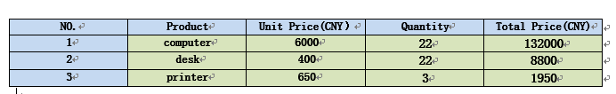

C# How to export table from Excel to Word preserving formatting
Introduction
The tools you need: Free Spire.Office for .NET
Visual studio 2013
Preparations before coding: you should download and install the package of Free Spire.Office for .NET correctly, then add the dll files of Spire.Doc and Spire.XLS into the program assemblies as references, and add the using directives as well.
using Spire.Doc;
using Spire.Doc.Documents;
using Spire.Doc.Fields;
using Spire.Doc.Formatting;
using Spire.Xls;
using Spire.Xls.Collections;
using Spire.Xls.Core;
using System;
namespace Xls2Doc
{
class Program
{
static void Main(string[] args)
{
//Initialize an instance of Workbook class and load excel from file
Workbook workbook = new Workbook();
workbook.LoadFromFile(@"C:\Users\Administrator\Desktop\sample.xlsx");
//Get the first worksheet
Worksheet sheet = workbook.Worksheets[0];
//Create an object of Document class, add table to Word and set the rows and columns number based on the cells range that contains data
Document doc = new Document();
Table table = doc.AddSection().AddTable(true);
table.ResetCells(sheet.LastRow, sheet.LastColumn);
//Traverse the rows and columns of table in worksheet and get the cells, call a custom function CopyStyle() to copy the font style and cell style from Excel to Word table.
for (int r = 1; r <= sheet.LastRow; r++)
{
for (int c = 1; c <= sheet.LastColumn; c++)
{
CellRange xCell = sheet.Range[r, c];
TableCell wCell = table.Rows[r - 1].Cells[c - 1];
//Fill data to Word table
TextRange textRange = wCell.AddParagraph().AppendText(xCell.NumberText);
//Copy the formatting of table to Word
CopyStyle(textRange, xCell, wCell);
}
}
//Set column width of Word table in Word
for (int i = 0; i < table.Rows.Count; i++)
{
for (int j = 0; j < table.Rows[i].Cells.Count; j++)
{
table.Rows[i].Cells[j].Width = 100f;
}
}
//Save document
doc.SaveToFile("result.doc", Spire.Doc.FileFormat.Docx);
System.Diagnostics.Process.Start("result.doc");
}
//The custom function CopyStyle() is defined as below
private static void CopyStyle(TextRange wTextRange, CellRange xCell, TableCell wCell)
{
//Copy font style
wTextRange.CharacterFormat.TextColor = xCell.Style.Font.Color;
wTextRange.CharacterFormat.FontSize = (float)xCell.Style.Font.Size;
wTextRange.CharacterFormat.FontName = xCell.Style.Font.FontName;
wTextRange.CharacterFormat.Bold = xCell.Style.Font.IsBold;
wTextRange.CharacterFormat.Italic = xCell.Style.Font.IsItalic;
//Copy backcolor
wCell.CellFormat.BackColor = xCell.Style.Color;
//Copy text alignment
switch (xCell.HorizontalAlignment)
{
case HorizontalAlignType.Left:
wTextRange.OwnerParagraph.Format.HorizontalAlignment = HorizontalAlignment.Left;
break;
case HorizontalAlignType.Center:
wTextRange.OwnerParagraph.Format.HorizontalAlignment = HorizontalAlignment.Center;
break;
case HorizontalAlignType.Right:
wTextRange.OwnerParagraph.Format.HorizontalAlignment = HorizontalAlignment.Right;
break;
}
}
}
}
using Spire.Doc; using Spire.Doc.Documents; using Spire.Doc.Fields; using Spire.Doc.Formatting; using Spire.Xls; using Spire.Xls.Collections; using Spire.Xls.Core; using System; namespace Xls2Doc { class Program { static void Main(string[] args) { //Initialize an instance of Workbook class and load excel from file Workbook workbook = new Workbook(); workbook.LoadFromFile(@"C:\Users\Administrator\Desktop\sample.xlsx"); //Get the first worksheet Worksheet sheet = workbook.Worksheets[0]; //Create an object of Document class, add table to Word and set the rows and columns number based on the cells range that contains data Document doc = new Document(); Table table = doc.AddSection().AddTable(true); table.ResetCells(sheet.LastRow, sheet.LastColumn); //Traverse the rows and columns of table in worksheet and get the cells, call a custom function CopyStyle() to copy the font style and cell style from Excel to Word table. for (int r = 1; r <= sheet.LastRow; r++) { for (int c = 1; c <= sheet.LastColumn; c++) { CellRange xCell = sheet.Range[r, c]; TableCell wCell = table.Rows[r - 1].Cells[c - 1]; //Fill data to Word table TextRange textRange = wCell.AddParagraph().AppendText(xCell.NumberText); //Copy the formatting of table to Word CopyStyle(textRange, xCell, wCell); } } //Set column width of Word table in Word for (int i = 0; i < table.Rows.Count; i++) { for (int j = 0; j < table.Rows[i].Cells.Count; j++) { table.Rows[i].Cells[j].Width = 100f; } } //Save document doc.SaveToFile("result.doc", Spire.Doc.FileFormat.Docx); System.Diagnostics.Process.Start("result.doc"); } //The custom function CopyStyle() is defined as below private static void CopyStyle(TextRange wTextRange, CellRange xCell, TableCell wCell) { //Copy font style wTextRange.CharacterFormat.TextColor = xCell.Style.Font.Color; wTextRange.CharacterFormat.FontSize = (float)xCell.Style.Font.Size; wTextRange.CharacterFormat.FontName = xCell.Style.Font.FontName; wTextRange.CharacterFormat.Bold = xCell.Style.Font.IsBold; wTextRange.CharacterFormat.Italic = xCell.Style.Font.IsItalic; //Copy backcolor wCell.CellFormat.BackColor = xCell.Style.Color; //Copy text alignment switch (xCell.HorizontalAlignment) { case HorizontalAlignType.Left: wTextRange.OwnerParagraph.Format.HorizontalAlignment = HorizontalAlignment.Left; break; case HorizontalAlignType.Center: wTextRange.OwnerParagraph.Format.HorizontalAlignment = HorizontalAlignment.Center; break; case HorizontalAlignType.Right: wTextRange.OwnerParagraph.Format.HorizontalAlignment = HorizontalAlignment.Right; break; } } } }
Before: Table in EXCEL

After: Table in Word

More information
About Free Spire.Office for .NET
Free Spire.Office for .NET is a combination of Enterprise-Level Office .NET components offered by E-iceblue which allows developers to open, create, modify, convert, print, View MS Word, Excel, PowerPoint and PDF documents. It includes Free Spire.Doc, Free Spire.XLS, Free Spire.Spreadsheet, Free Spire.Presentation, Free Spire.PDF, Free Spire.DataExport, Free Spire.OfficeViewer, Free Spire.PDFViewer, Free Spire.DocViewer, Free Spire.Barcode and Free Spire.Email. Furthermore, it allows users to export data to popular files such as MS Word/Excel/RTF/Access, PowerPoint, PDF, XPS, HTML, XML, Text, CSV, DBF, Clipboard, SYLK, etc.
More information about those free components, you can visit the official website below.
Website: https://code.msdn.microsoft.com/C-How-to-export-data-from-3da70e07/https://www.e-iceblue.com/